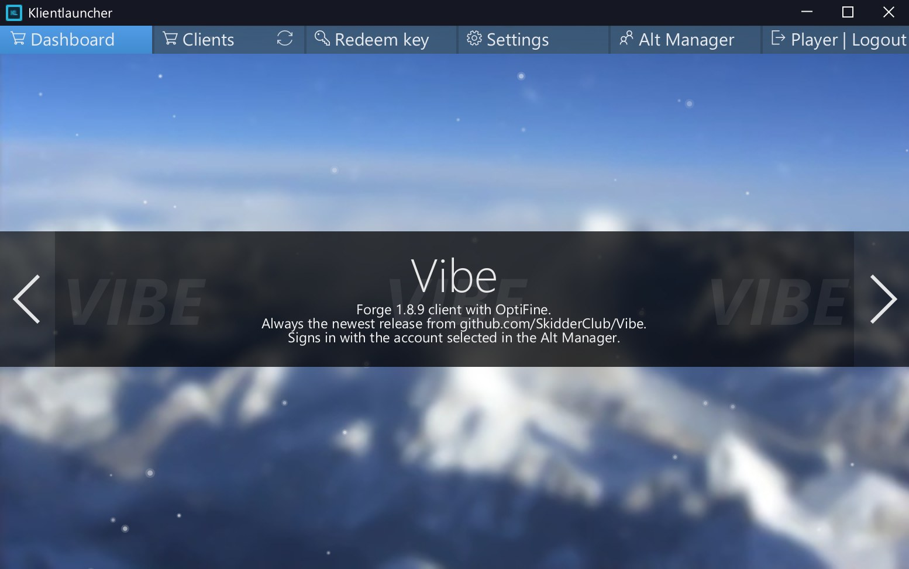
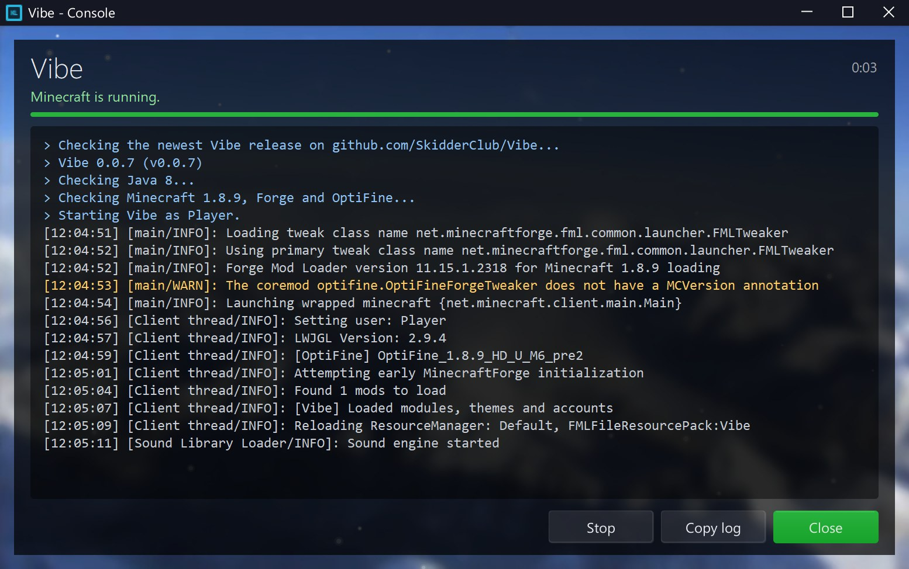

KlientLauncher
One launcher for your Minecraft 1.8.9 clients. Sign in once, pick a client, press Start.
Download for WindowsNo Java yet? Get Temurin 21, free from Eclipse Adoptium.
For Windows PCs. Open this page on your computer to download.

Clients
Everything the launcher can start right now. New versions arrive the next time you press Start.
Loading the client list…
Features
Your accounts, in one place
Sign in with Microsoft using a code in your browser, or use cookie, token and offline logins. With Auto login, one click on Login signs in your main account.
The Alt Manager is Vibe’s own, with the same encrypted vault, so your accounts work in the launcher and in game alike.

Watch it start
Every client opens a console window with the download progress and the live game log. Warnings show in yellow and errors in red, so a crash explains itself.
Stop ends the game and everything it started. Copy log puts the whole output on your clipboard for a bug report.

Always up to date
Vibe comes straight from github.com/SkidderClub/Vibe; the other clients from this site.
Checked before it runs
Every downloaded file is compared with its published checksum. Anything that doesn’t match is thrown away.
Nothing to set up
Java, Minecraft 1.8.9, Forge, OptiFine and the game assets are downloaded for you on the first start.
Setup
About two minutes the first time. After that, starting a client is one click.
Install Java
Skip this if you have Java 11 or newer. Otherwise install Temurin 21 (the .msi).
Download
Get KlientLauncher.jar and put it anywhere, for example on your desktop.
Log in
Double-click the jar, click Login and add your Microsoft account in the Alt Manager.
Play
Open Clients and press Start. The first start downloads a few hundred MB.
Help
Double-clicking opens WinRAR or 7-Zip instead of the launcher
Your archive program has taken over .jar files. Open a terminal in the folder with the jar (Shift + right-click → Open in Terminal) and run:
javaw -jar KlientLauncher.jarMy browser says the file could harm my computer
Browsers warn about every .jar download. Choose Keep. The launcher only downloads from this site, from GitHub and from the official Minecraft, Forge, OptiFine and Java servers, and it checks every file against its checksum.
Nothing happens when I open it
Java is probably missing or older than version 11. Install Temurin 21 and try again.
Is my Microsoft password stored?
No. You type it on Microsoft’s own sign-in page; the launcher only receives a sign-in token, which is kept encrypted on your PC in Vibe’s account vault.
Where are the game files and worlds?
Everything lives in %APPDATA%\KlientLauncher: Java, Minecraft, each client’s files, worlds and settings. Delete that folder to remove the launcher completely.
How do I update the launcher or the clients?
Clients update themselves when you press Start. A new launcher version is simply a new download from this page.